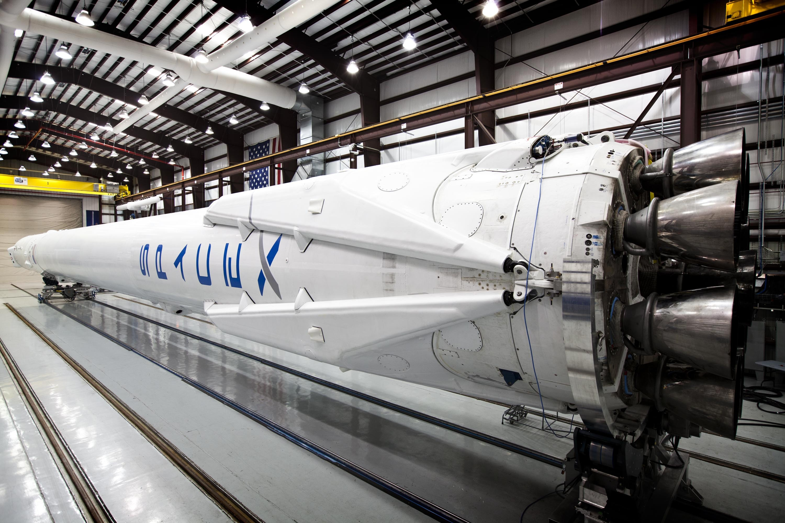
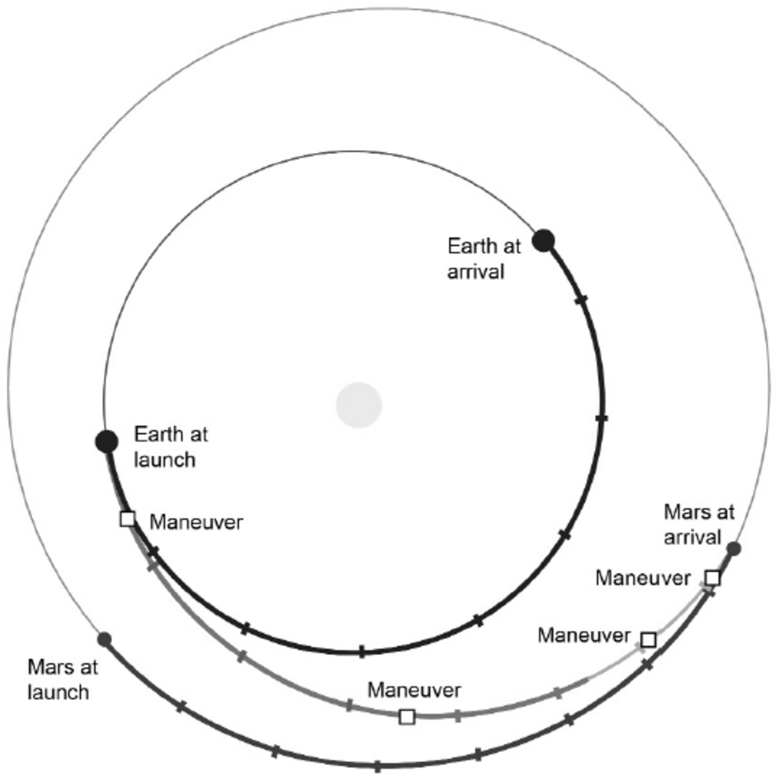
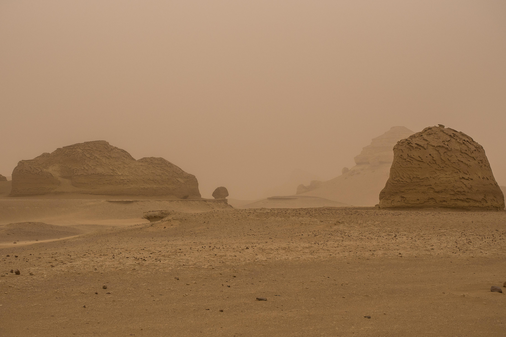
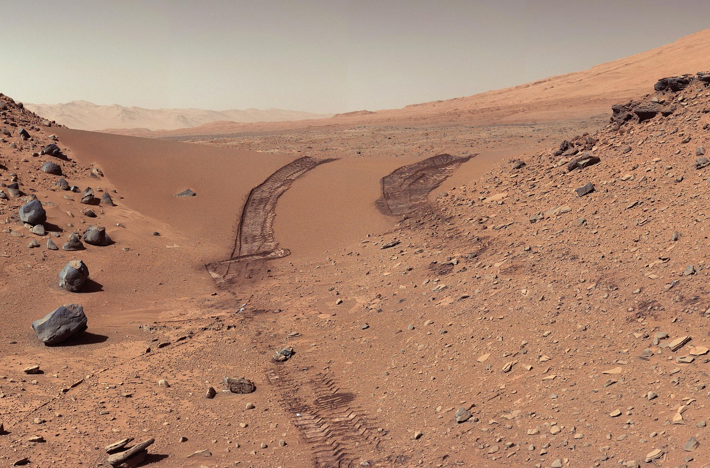
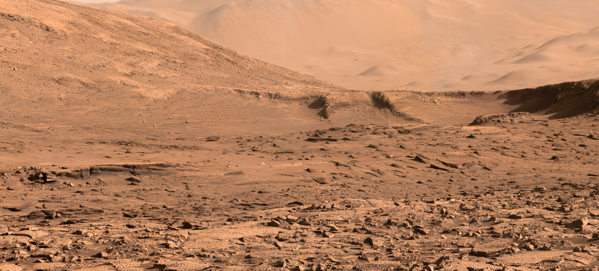
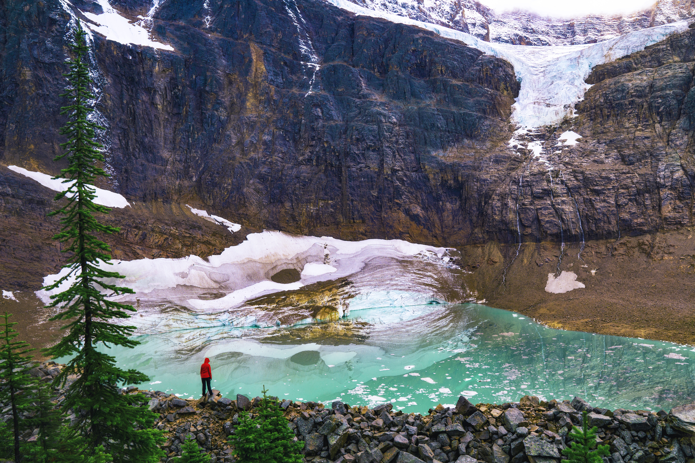
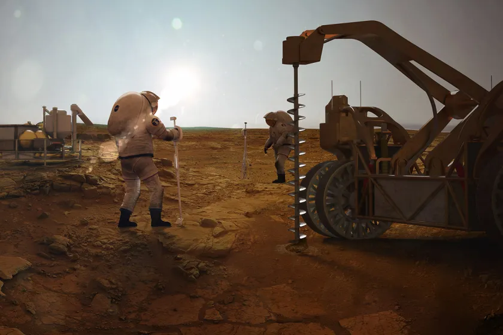
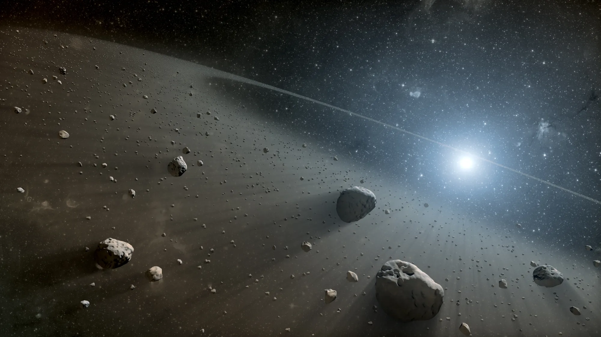
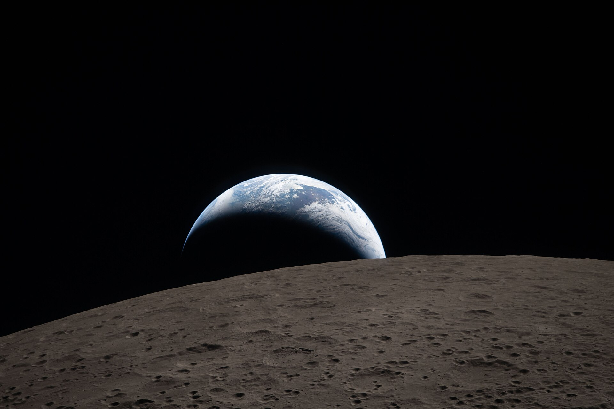

Do the Advantages Outweigh the Disadvantages of Mars Colonisation?

Foreword:
This essay was written for as an 'Independent Project' during my A-Level studies. My school were a little silly and didn't obey one of the national project schemes, so this essay was almost entirely pointless. Either way, I broadly stand by what I wrote, and it took a lot of hours to produce, even with my first ever use of ChatGPT for the grammar checking, I believe.
This essay was, hypothetically, produced with a supervisor. This supervisor was like a kind of left-wing Jordan Peterson, filled with that same self-righteousness confidence, and with a similar pseudo-intellectual jack-of-all trades approach. He never offered any meaningful ideas, however. I will credit him for encouraging me to sharpen my approach, but what I will not credit is his suggestion of Gil Scott-Heron's poem 'Whitey on the Moon' as a source. Not only for how silly it would look in my sources, nor for how silly it would be to have a random quote from some slop poem in the middle of a scientific essay, but also because it's a terrible poem.
A rat done bit my sister Nell
With whitey on the moon
...
The man just upped my rent last night
Cause whitey's on the moon?
— Gil Scott-Heron, 1970The shere shallowness of this poem is outstanding, never mind the poor grammar. It blames all the problems this person has on an entirely disconnected event. If we took into account the experiences of the worst-off in society before doing anything, we would never get anything done. Suggesting that reaching the moon raised his rent is even more farcical. The notion that the 1966 lunar landing, which developed the Gaia hypothesis, tested spacewalking equipment, and set back the Soviets, can be compared to the colonisation of Mars is equally outstanding from my supervisor.
Anyway, I present my essay here, with added pictures. These images are all copyright free, often sourced from NASA. As these are additional to the content of this essay, they are NOT cited in the references. I have not changed the content whatsoever, and there may be many scientific errors therein, but I do not apologise for these.
If we do one day end up on Mars, it will be because of some great scientific leap, the likes of which it is never wise to speculate nor depend upon. We know so little of the human condition, and even less of the Universe, so I suggest we do not waste so much of our ingenuity on a project with so few benefits.
Introduction:
Throughout history, man has dreamt of the stars, and in our modern age this dream seems tantalisingly within our reach. The current space industry is experiencing “exponential growth” due to “higher investment, improved infrastructure, and digital technology” (Coykendall, Hardin, Brady and Hussain 2023). With this has come a large academic movement advocating for the human occupation of Mars, as well as a large economic one, with influential billionaire Elon Musk founding SpaceX with the goal of one million people living on Mars by 2050.
A SpaceX rocket. SpaceX is Elon Musk's now public company, with the explicit aim of colonising Mars.
Yet such a far-fetched concept, in my view, merits careful scrutiny. This paper will argue that the positives of Mars colonisation are greatly outweighed by the negatives (the massive risks to human life and the hundreds of billions needed to develop the new technologies, whilst the alternative solutions are far more cost-effective, thus leaving there no reason to occupy Mars.
1.1 Qualifications:
Due to the limited scope of this modest paper, several issues are deliberately not being discussed. A future colony’s legal system will be ignored and issues over who owns Martian land (currently illegal under the Outer Space Treaty (Williston 2020)) will be disregarded. The operation will be assumed to be an international effort, although those wondering about this issue would be advised to read Robert Zubrin’s (1996) treatment of this subject.
Nor will this paper consider any ethical problems about whether we have any right to occupy another planet. I refer to Levchenko et al on this issue (2018). There will be assumed to be no life upon Mars, a reasonable assumption based on current scientific consensus, yet, without it, there are difficult ethical questions which arise.
The popular idea of terraforming is not considered. Terraforming can be seen as a way to bypass the problems generated by Mars’ geography. It is an extremely far-fetched aspiration, devoid of scientific fact. This has been confirmed by several sources, such as NASA and Jakoksy and Edwards (2018).
1.2 Methodology:
Mars colonisation is defined as the creation of a long-term human settlement on Mars. The advantages and disadvantages of Martian occupation should be debated, before an, admittedly subjective, judgement on its viability should be reached.
These advantages must apply to the human race generally. It can be argued that, in our current capitalist system, private individuals can do whatever they want to do as long as it does not harm others, so there is no point in discussing the arguments for and against a private venture. Yet, I would argue that Mars colonisation can never be a private venture. Space is governed by international laws and National Governmental laws, so to colonise Mars one must work with Governments. Investment from national space agencies will inevitably be used (and already are (Linck et al 2019)) to fund parts of this mission, and even the private companies are often publicly owned, so it is in the public interest to ensure what they are paying for represents a legitimate gain for them.
In evaluating these arguments, the strength and number of the counterarguments will be discussed, and, if an idea withstands the necessary criticism, it will be considered in the concluding judgements. The order by which this will be achieved is detailed below.
1.3 Roadmap:
This essay will firstly discuss the required steps involved in Mars colonisation and argue that it is an intrinsically and unavoidably costly and dangerous process. It will then proceed to analyse the arguments for establishing a settlement and their counterarguments. Considering alternatives, other solutions will be proposed, and their advantages and disadvantages will be weighed up and a concluding judgment will finally be reached.
How Could Mars be Colonised?
In this section I explore the challenges required to reach the planet of Mars and the subsequent obstacles for humankind to maintain life on Mars.
2.1 Reaching Mars:
The first stage of colonisation is simply just reaching Mars. Since Mars’ orbit around the sun takes 687 days, Earth and Mars are rarely conveniently aligned and the distance between the two planets varies considerably. At its closest, the distance between them is 56 million kilometres and reaches a maximum of a staggering 400 million kilometres (Cox and Cohen 2013). A Hohmann transfer can be used to minimise the fuel needed for this journey, although using more fuel and editing this course results in faster travel times (Zubrin 1996). This method of travelling to Mars requires a 26 month wait between trips. According to Robert Zubrin (1996), using a partial Hohmann transfer will require you to travel “at least 400 million kilometres” and would take at least 150 days (73).

A Hohmann transfer orbit, as referred to above. The bottom line shows Mars' orbit, whereas the central line shows Earth's. The line joining the two is the path of our potential rocket.
There are multiple issues to consider when undertaking travelling to Mars. Estimated costs for a single visit to Mars total over 100 billion dollars (Linck et al 2019), raising the obvious issue as to who will pay for this and whether this money could be better spent elsewhere, in light of Planet Earth’s not inconsiderable challenges (energy, poverty, climate change, population growth etc). A Martian colony would not be self-sufficient from the outset, so constant re-supply missions will be needed, meaning multiple, highly expensive rockets will need to be constructed. If a resupply mission were to fail or were there to be any supply issues experienced on Mars itself, colonists would be waiting for years for essential supplies. Martian missions have failed frequently in the past (NASA n.d.) so this represents a significant risk and deterrent for potential colonists.
There are some counter arguments. The rate of failure of Mars missions over the past few decades has been lower than earlier missions (NASA n.d.), implying that such issues will eventually be overcome. The usage of electrical propulsion or nuclear thermal propulsion (NTP) is often proposed, with the intention of reducing cost and increasing speed. NTP is already far more efficient than conventional (chemical) rockets, with its specific impulse (a measure of efficiency) being more than double chemical rockets’ (NASA 2021). NTP, however, uses nuclear fission, an already controversial process, which raises issues about safety and the safe storage of hazardous waste. Electrical propulsion is even more efficient, far cheaper and can generate faster speeds than chemical rockets. The problem with electrical propulsion is whether they can be used in spacecraft at all, as they tend to have low thrusts (NASA 2004). These new methods could save time and millions of dollars per trip (NASA 2021), yet currently have not been developed sufficiently to be used frequently, although they may be fully developed in time for a future Martian mission.
Whilst I see the merit in the counterarguments of successfully decreasing the risk and cost of the mission, both will still inevitably be exorbitantly high, especially in the earlier stages of the development and deployment. Even a halving of the cost of fuel and failure rate, going to Mars still necessitates an astronomical cost given the quantity of space voyages required and the construction and on-going development expenses. The research itself is costly, as Linck et al (2019) describe, and the concepts may still be undeliverable, or viability may prove to be simply unachievable. For these reasons, I believe the original issue remains, and getting to Mars will be extremely challenging, risky and costly.
2.2 Establishing a Colony:
Every aspect of life on Mars will be entirely different to our current Earth lifestyle. Living on Mars poses significant dangers to colonists, would require a large drop in living standards and would cost significant sums of money to develop and produce. A non-exhaustive selection of critical considerations is discussed below:
2.2.1 Power:
The most desirable sources of power, in terms of cost and durability, would be renewable energy. Solar panels, whilst effective on the International Space Station, are less so on Mars. Mars is further away from the sun than Earth, meaning they are far less effective. Martian dust storms are also a major problem. Planetary scientist Michael Smith comments: “Every year there are some moderately big dust storms that pop up on Mars and they cover continent-sized areas and last for weeks at a time”. Rarely, global dust storms on Mars also occur (Mersmann 2015). Colonists would have to contend with weeks of massively decreased power output if solar panels were to be used. Martian dust is electrostatically charged, meaning it sticks to solar panels, further decreasing their output (Mersmann 2015).

What the aftermath of a Martian dust storm could look like. They present a major challenge to any Martian missions.
Martian winds are weaker than Earth’s (Mersmann 2015), meaning wind-based turbines are unlikely to be as effective as on Earth.
Nuclear power, an unrenewable process, therefore, is likely to be the best option. Fusion does not exist currently in a profitable form, so nuclear fission would have to be used instead (Zubrin 1996). This would require the continual supply route of tonnes of heavy and expensive radioactive substances from Earth constantly, a disadvantage of Mars colonisation.
2.2.2 Nutrition:
Another problem of Mars colonisation would be foodstuffs for essential human sustenance. Shipping tonnes of food to Mars all year around for the colonists would not only be potentially dangerous, but also highly expensive. Supply from Earth is unsustainable as a colony grows. Food, therefore, will have to be grown on Mars. It is also worth noting that humans cannot eat just one type of food: they need a balanced diet. Zubrin (1996) suggests plants, mushrooms and fish, which seem likely to work.
Martian soil, whilst it will need additional fertiliser, contains all the key elements needed for plant growth (NASA 2015) and mushrooms and fish depend on the plants. Kevin Cannon (2019), an expert in this area, admits food on Mars will be “challenging”, yet proposes a diet of plants, lab-grown meats and insects. He claims cellular agriculture (the artificial growing of animal cells) is still under development yet could prove promising. He argues that, to avoid harsh atmospheric conditions on the planet’s surface, plants should be grown “in tunnels underground”, but this clearly requires additional energy for artificial lighting and poses additional pressures on power sources described in 2.2.1 above.
Whilst food on Mars is possible, it will require huge investment in new technologies and humans will still not receive the same dietary diversity and therefore would require nutritional supplements to maintain a balanced diet. This must be considered when evaluating the quality of life on Mars compared to Earth.
2.2.3 Oxygen:
The Martian atmosphere is 96% carbon dioxide with only minute amounts of oxygen (NASA n.d.) and therefore is unbreathable. To avoid colonists being forced to wear helmets all the time, the Mars base must be entirely sealed off from the outside world. Oxygen could be sourced from the CO2 found easily on Mars, either using potential food sources or artificially. The latter has already been achieved by scientists on Mars, via the MOXIE instrument (NASA 2021). As with most challenges on Mars, this requires large amounts of energy, although appears achievable based on current available technologies.
2.2.4 Perchlorates:
Martian soil is full of deadly perchlorate ions (ClO4-), which, when ingested, leads to the “[slowing] of the function of many organ systems”. These ions under the high levels of radiation on Mars (see below for further details) can cause several other ions to form (ClO3- or ClO2-) which result in “respiratory difficulties, headaches, skin burns, loss of consciousness and vomiting” (Davila, Wilson, and Coates 2013, 1&3). Concerningly, we do not know the long-term effects of these ions. These ions would require colonists to take regular blood tests and for any objects which have been outside the Martian base to be thoroughly decontaminated. Another difficulty posed is the fact that they could be present in the water sources on Mars that have been detected there (Davila, Wilson, and Coates 2013). The extraction and subsequent utilisation of any materials from the Mars surface would therefore all require additional treatments before being deemed safe for humans, thus far more difficult than any equivalent process on Earth.

Martian sand dunes, after the Curiosity rover has passed through. Martian soil, despite its good prospects for growth, is a serious and often forgotten hazard.
The aforementioned study, however, did provide one potential usage for perchlorate ions: the extraction of oxygen (Davila, Wilson, and Coates 2013). I see this argument as irrelevant, however, as this process can already be achieved by other, less potentially hazardous means (per 2.2.3 above), leaving the presence of perchlorates as a significant obstacle to Mars colonisation.
2.2.5 Gravity:
The gravity on Mars is 0.375 times that of Earth which, unsurprisingly, has several negative effects on human health. Bone loss (osteopenia) will occur and can currently only be reduced by extensive and difficult exercise routines. Astronauts also suffer from SANS (Spaceflight-Associated Neuro-ocular Syndrome), which impacts their vision and could, after longer exposure, result in a “permanent loss of optic nerve... tissue and thus, a permanent loss of visual function” as the condition gets worse the longer the exposure (Patel, Brunstetter and Tarver 2020). We simply do not know the effects of long-term low gravity on humans, as the longest time spent in space to date is 437 days. There are no available cures for these conditions (Patel, Brunstetter and Tarver 2020). The only counter argument is that we can hope a new technology is invented to solve these issues, but this to me is a weak point as we do not even know whether it is possible to fully solve these issues, never mind the cost of the research, leaving me to conclude that gravity is a significant practical disadvantage of colonisation.
2.2.6 Radiation:
The central concern regarding radiation is the risk of cancer. Radiation is a physical mutagen which changes the structure of DNA and radiation rates on Mars are almost 100 times that of Earth. There have been several attempts to solve this problem (hydrogenated boron nitride nanotubes and polyethylene) (Frazier 2017), but one promising attempt is using Martian regolith. This is a material readily available on Mars and can reduce radiation on the surface of Mars by 41% (Llamas, Aplin, Berthoud 2022) by coating the outside of structures with it. The negative side effect is the requirement for future colonists to remain effectively ‘underground’.
The cancer rate increase caused by radiation is, according to Zubrin (1996), is “not a major risk” (96). It can be argued this is true for a visit to Mars and back, but it is when colonists are expected to live for many years on Mars, this does become a serious issue. According to his own numbers, a lifetime on Mars would result in a 20% increased rate in the risk of cancer versus Earth (Zubrin 1996, 96).
Other serious issues caused by radiation include cardiovascular diseases, cognitive decline and spinal problems (Patel, Brunstetter and Tarver 2020).
Despite the counterarguments that this risk can be considerably decreased, the serious risks are still present. Still, I would advocate that the problem long-term exposure of Martian radiation still has not sufficiently been dealt with, thus it represents an argument against Mars colonisation.
2.2.7 Psychological Issues:

A Martian landscape from the Curiosity rover. Whilst beautiful on first glance, we need to discuss why exactly anyone would want to live here, thousands of miles from our natural home.
Humans on Mars will be millions of miles away from their families and familiar home environment and comforts, with no hope of returning for considerable periods of time. They will also be required to live with the same people and perform the same monotonous tasks every day, all with increased background threats and risks. Communication with Earth will also prove challenging, with signals taking 20 minutes to reach Earth from Mars (NASA n.d.), making meaningfully interactive video or phone calls impossible. It is likely colonists will be hard worked to maintain basic life sustaining norms. They risk depression and deprivations and uncertainties being so far from home.
Such a scenario is not unprecedented: those living in Antarctica are subjected to similar daily pressures. With such an inhospitable and demanding climate, it is no wonder that the permanent population is zero, I conclude that human beings are gregarious by nature, requiring the comfort of the company of others and physiologically are not built for long-term living in inhospitable environments.
Gage (2013) argues that meticulously careful selection the right people (mentally and physically) for this task may weaken this argument. I think the Antartica example debunks this point. A Martian colony will have to avoid this argument if it is to succeed.
Based on the medical arguments, living on Mars represents a serious risk for humans (Patel, Brunstetter and Tarver 2020), and one with no real counterarguments in my view. We do not even know whether humans will survive living on Mars for any period of time, and these issues will miraculously need to be overcome before we can even set foot on Mars. A case for Mars colonisation would need to ignore this issue.
Ignoring the medical side, none of the above problems will doom a Mars colony individually, yet in my view it is the accumulation of them that present a problem. Dealing with so many expensive and risky problems would seem unnecessary if there were not a series of excellent benefits to be gained from Mars.
These issues also raise the question as to why anyone would ever want to live on Mars. Why would anyone want to live somewhere where: their life expectancy is decreased; they will suffer from ever-present health concerns; they can never truly go outside; they can barely contact Earth; their diet will be less varied; they are always working; and their quality of life will be far worse? The wage of workers on Mars must be huge to reduce the problems posed by the paragraphs above, bringing up the issue of profitability. To avoid all of the problems above, even if it were possible, would require trillions in investment, construction and maintenance. This section poses a formidable argument, yet colonial advocates still maintain the excellence of this idea.
Arguments in Favour of Colonisation:
To prove this venture is worthwhile, a series of arguments must be presented which cannot be successfully disarmed and overcome the issues presented above. Thus, the arguments for the colonization of Mars must be evaluated.
3.1 The Survival of Humanity:
The central justification posed by Musk is “there will be some extinction event”, that humanity requires a back-up world when, and not if, our continued existence on planet Earth is threatened (Musk 2016). The logic behind this argument is simple – humanity is constantly bombarded with dangerous threats and so eventually we will be forced to contend with a mass relocation event, so it is wise to prepare for this.
To disprove this argument, therefore, either the idea that Mars will be our salvation to protect us from these threats or viability of the threats themselves must be debunked. Given the fact that Musk is striving for us reach Mars soon, he must think these dangers will definitely be arriving and that they will occur soon, so events that may happen in the far future will not be considered. The issues discussed in the following segment will be based upon “existential risks”, as discussed in Nick Bostrom’s 2002 paper on the same subject, with an emphasis on those described as possessing the ability to permanently wipe out our species.
3.2 Superintelligent Artificial Intelligence:
It can be argued that a rogue superintelligent artificial intelligence (hereafter referred to as AI) represents a huge threat to humanity. Bostrom sees this as the biggest issue facing humanity now, describing it as “children playing with a bomb” (Bostrom and Adams 2016). Simply telling it to solve an impossible problem may result in “turning all the matter in the solar system into a giant calculating device” (Bostrom 2002, 7).
I would argue that the solution of Mars colonisation is useless against this threat. If we assume an AI with an intelligence greater than a human were to be created and if it were intent on destroying us, accessing humans on Mars or Earth would present it with no great issues; as we would have already created the technology to easily send objects to Mars which it could access, or simply use any form of radio communication or Wi-Fi they inevitably must possess on Mars to upload itself onto a Mars infrastructure. Following this logic, Mars fails to solve all the issues caused by AI, so this case can be rejected.
3.3 Asteroids:
Given asteroids’ record of wiping out the dominant species on Earth, they present a “real but very small risk” to life on Earth (Bostrom 2002, 9). However, I think argument for Mars entirely fails here since NASA has already developed and tested the viable technology to repel asteroids (Handal, Surowiec and Bardan 2022) from hitting Earth, so we are no better nor any worse on Mars compared to remaining on Earth.
3.4 Global Warming:
One case for colonisation is that we need a safe haven if global warming continues. Scientists acknowledge the severe (and increasing) risk posed by rampant climate change, like “famine and undernutrition, extreme weather events, conflict and vector-borne disease”, as well as “air pollution and sea-level rise”. Worst of all, “vulnerable states...will continue to be hardest hit” (Kemp et al). Following this logic, with drastic climate change seeming inevitable, we must protect our species with the opportunity to mass-migrate to Mars.
I would argue, however, that even an Earth devastated by the worst ravages of global warming is a much more habitable environment for humans than Mars. On Earth we possess easy access to a plentiful supply of sustainable food, water and oxygen, albeit we struggle to share and conserve resources adequately. Certainly in comparison to Mars, even a suboptimal Earth is preferable, since Mars lacks basics for human survival.
Given the justified concernment over global warming, instead of exiling colonists millions of miles away from our natural paradise to the barren wasteland of Mars, it seems infinitely preferable to focus the vast resources not the colonisation of another planet, but the better conservation and repair of our fragile ecosystems and remedying the global socio-economic challenges of our home planet.

Melting Northern hemisphere ice as a result of rising temperatures. Despite how much we may wish to escape to a fairer climate, Mars certainly is not the place to go. It is a barren, hostile wasteland, and it seems unlikely Earth shall ever get this bad.
3.5 Nuclear Issues:
The effect of a singular nuclear warhead is small and unlikely to doom humanity, but “the possibility of a nuclear winter” (where debris thrown up blocks sunlight) worries scientists greatly (Bostrom 2002, 7). It is an irrefutable argument that sending humans to Mars will ensure the survival of our species, since there are no nuclear weapons on Mars.
One objection to this, is the power situation on Mars, as described in 2.2.1 above, will present its own issues regarding the dangerous presence of nuclear power on Mars. Especially in the first generation of colonists, any nuclear catastrophe which occurs (imagine a Chernobyl scenario) will surely doom the inhabitants. I would argue, however, that this argument is a straw man fallacy, and avoids the argument above and does not sufficiently deal with the issue.
There also remains the argument that nuclear war on the scale above will not happen. If we assume scientific progress continues, nuclear weapons will become more powerful and easier to produce, meaning more countries have access to them. Any hostile nation, therefore, who wants to launch a nuclear attack on an opponent will deal increasingly larger damage at once, and the potential repercussions for this become greater. This strengthens the case for Mutually Assured Destruction (the idea that no-one will use nuclear weapons because their opponents also have them). Following this logic, the chance of nuclear war should be ever decreasing (Bostrom 2002). I believe this is a strong argument, yet I would say that, even accepting this argument, there remains a slim chance of global nuclear warfare taking place, and presents a cogent argument for Mars colonisation taking place.
3.6 Economic Opportunity:
Pro-colony advocates often argue there is significant economic value to be found on Mars. Their reasoning is two-fold: (i) the money generated by interplanetary colonisation can outweigh the high maintenance and high set-up cost, and (ii) Mars can provide goods and services of great future value to humanity (Zubrin 1996). If this reasoning were true, it could represent a significant argument for Mars colonisation.
3.7 Crops:
Zubrin (1996) makes the case that “Mars...will be able to grow crops for export” (225). To me, this seems counter-intuitive. Zubrin assumes that plants can be grown outdoors, yet this contradicts current scientific consensus (Cannon 2019). This consideration is of importance due to the high energy costs. Even assuming that we can grow plants on the surface of Mars, there are the costs of artificial irrigation and onerous soil purification to contend with. Who would be the market for this expensive produce? The transport costs between Earth and Mars seem prohibitive. It would appear preferrable for Mars settlements to grow their own food and to be self-sustainable.
3.8 Tourism:
Whilst there may be a novelty market for it, it is difficult to argue that tourism will be particularly popular on Mars, due to the extremely arduous travel time involved for those on Earth and the harsh living requirements (for example the shallow diet and necessity to constantly exercise). Holidaying in such a miserable place with the risk of radiation sickness hanging over your head seems unwise.
3.9 Resource Extraction:
This leaves resource-extraction as the last economic reason to occupy Mars. Given the fact that our resources on Earth are limited and fast becoming depleted, it can be argued the prices will increase until our supply of essential resources and minerals eventually runs out completely. In this scenario, any resources that can be extracted from space at a lower price than their Earth counterparts will greatly help humanity.
3.10 Martian Resources:
Mars itself sadly possesses few exports of real value. The existence of precious metal ores on Mars which would be valuable enough to export back to Earth “is still hypothetical” (Zubrin 1996, 225). Zubrin concludes that only heavy water (D2O) should be focussed on. He justifies this by saying that D2O, a substance vital for current nuclear fission processes, is five times more prevalent on Mars than Earth. Better still, this is created as a side-process to water extraction (1996).

NASA's concept of Martian water miners drilling down to find ice.
The counterargument here is that this is not entirely true. This water extraction would require more steps to separate the water and deuterium and his suggested use in nuclear fusion is scientifically not the only option (tritium can be used mixed with deuterium which can be easily made using lithium). Zubrin also ignores the high transport costs from Earth to Mars, and it is also straightforward, despite being expensive, to extract this abundant material from Earth.
To me, this counterargument does not outweigh the argument itself. Based on this method, we can obtain a somewhat useful material presumably at a lower cost than what it would cost to extract this material on Earth, which means it satisfies the criteria above.
3.11 Asteroids:
Zubrin (1996) points out another case for Mars colonisation: access to asteroids. Our galaxy’s main asteroid belt extends over 150 million miles and is between Jupiter and Mars (Cox and Cohen 2013). He argues we can use Mars as a stop-over to access these asteroids more easily and to mine them for their precious metals.

A NASA illustration of the potentially lucrative asteroid belt, which is located between Mars and Jupiter.
The counterargument against asteroid mining revolves, predictably, around the large initial cost and scientific difficulty. I also question the role of Mars in this operation. Given that we need these materials for Earth’s usage, going from Earth to the asteroid then to Earth is far less challenging than the journey from Earth, to Mars, to the asteroid, then back to Mars, then finally back to Earth. What is the purpose of Mars in this economic venture?
Zubrin also overlooks the fact that ever more Near-Earth Asteroids are being discovered, with around 32,000 currently present as of writing (NASA 2023). Why should these not be used, instead of travelling far further towards Jupiter? The counter to this is that “around 90% orbit closer to Mars than to the Earth” (Zubrin 1996, 229), but this misses the point that these materials would be needed for Earth, not Mars, so this point does not work.
Based upon this, I believe the counterarguments far outweigh the argument for the use of Mars in asteroid mining. Mars here is at best a superfluous middleman who would only increase the cost and therefore decrease the value of this enterprise. I am left, therefore, to conclude that D2O is the only sensible export of any real importance to humanity, and its value is minimal due to the counterarguments.
3.12 Miscellaneous Additional Considerations:
One often referenced argument is that of “developing as a species”. They derive the necessity for expansion into space from a vague, semi-evolutionary argument, claiming space travel and becoming a multi-planetary species are the natural next progression of the human species, or even that these are “unavoidable”. This is described as positive, as we are “[embracing] innovation” (Levchenko et al 2018; Williston 2020).
On the other hand, the fact that human civilisation will change is not necessarily a good thing as evolution can have a positive or negative impact on a species. The ability to colonise Mars does not mean that we should colonise Mars (Williston 2020). This venture needs its own justification before it should be done, and so, following this reasoning, I reject this argument.
A historical precedent is also referenced by Zubrin (1996). He often considers Columbus, showing us how we can cement our place in history and to further civilisation, as having done something positive and significant for humanity. I do not accept this point as the comparison is invalid, for the reasons listed below.
With the discovery of North America, the explorers had no idea what was on the continent, and they certainly did not expect to discover a new continent. We explore for the potential to find something of value, yet we’ve already explored Mars and determined there is essentially nothing of any viable value on Mars to find (Zubrin 1996). Life in America for Europeans, whilst undeniably hard compared to Europe, had none of the essential, life-threatening challenge of Mars (e.g. food, water and oxygen). I, therefore, disagree with Zubrin’s argument.
Why Mars?
Finally, it is worth evaluating the alternative solutions to the problems Mars colonisation is trying to solve. Many of its advantages are also supplied by, and in some cases, exceeded by the alternatives proposed below. This is not to say that I would advocate for these alternatives, only that they may be preferrable to Mars in certain key aspects.
4.1 Other Celestial Bodies:
Any nearby habitable celestial body must necessarily have similar issues as Mars (see above for more details), and satisfies all the extinction avoiding arguments, thus only the differences must be evaluated.
4.1.1 The Moon:

The famous Earthset photograph, taken by Christina Koch. The next spot for human expansion may very well be in our own backyard, and this view may soon be a common sight.
I see the Moon as an excellent alternative to Mars. Zubrin (1996) argues that the difficulties with food production and lack of D2O make Mars superior to the Moon. I don’t believe this argument is particularly strong because of the following reasons.
All the issues regarding transport costs and time are disregarded with the Moon, which nullifies a significant disadvantage of Mars colonisation. Whilst Mars may be useful for its D2O reserves, I see the Moon as having far more economic opportunities: space tourism would be massive; interstellar observation would be useful (Zubrin 1996); and the moon possesses similar raw resources to Earth, if we were to ever to deplete our own (Cox and Cohen 2013). The food counterargument can be rejected, as Zubrin’s (1996) method for lunar food production is almost identical to the one Cannon (2019) describes for Mars. The Moon, from this assessment, provides far greater advantages than Mars whilst facing very similar disadvantages, thus I see it as the superior option.
4.1.2 Venus:
To further counter the heavy water issue, I refer to Venus. Venus is a similar wasteland to Mars but is far closer to us (Cox and Cohen 2013), giving an advantage in terms of travel time and cost. Venus also possesses large quantities of heavy water (Kluger 2010). I would argue this removes the argument that Mars should be colonised to gain D2O, as if this were the case Venus is far more viable than Mars.
4.1.3 Earth:
As mentioned previously, the best alternative to Mars is simply to invest in our own planet, already ideally set up for human habitation.

Our home planet, Earth, whose scientific name is Terra. Whilst developing Earth doesn't quite inspire the same sense of awe as colonising Mars, it could represent a far more practical and viable solution to the problems we face.
Zubrin (1996) argues we need a “new frontier” for exploration and culture to flourish, which “can only be Mars” (302). One counterargument to this is that there are plenty of frontiers on Earth we have not yet touched, such as high altitude, the poles, underwater living and deep-sea exploration. I see this argument as very strong. Take desert greening, for example. I believe a series of advantages will follow: economic growth from new urban environments; the effects of climate change weakened; and the amelioration of potential water crises. These must surely outweigh the weak Martian arguments we’ve seen, and for a fraction of the cost, given it will be taking place on our own planet.
I could see similar arguments being made for a number of other projects, which will actively work to help humanity with legitimate benefits. Zubrin’s (1996) counter to this is that these are not disconnected enough to reinvigorate innovation, yet the possibility of a fully underwater civilisation fully debunks this point. It would be disconnected, yet not too impractical like Mars is.
I believe the problem Zubrin (1996) identifies here is correct: he talks about the apparent stagnation of human civilisation and the need for major rejuvenation. Yet I fail to see Mars as the optimal solution. Another counterargument here is that we don’t need a physical new frontier. He assumes we need to explore a new location to motivate society, yet I believe a variety of concepts can do this. Throughout history there have been a variety of simple social movements that have had the power to change the world, without having to waste money colonising a space desert.
Conclusions:
Whilst there are undoubtedly opportunities for real gains to be made through Mars colonisation, they are all fraught with challenges due to four principal factors: i) the enormous and prohibitive distance between Mars and Earth; ii) the intensely hostile environment for humans simply to survive on Mars; iii) the massive and as yet unsolved scientific challenges that Mars colonisation presents which also speak to iv) the vast costs involved in making this even possible.
Based on our current levels of scientific understanding and competence, it appears to me that Mars colonisation does not justify the challenges, risks and likely eye-watering costs. The proposed alternative locations offer greater advantages and are more economically viable than Mars, and the immense sums of money involved could be spent far better on improving life on Earth for everyone on this planet. Given the fact that life has spent billions of years evolving to survive successfully on Earth, it should come as no surprise that we are most productive, healthy and happy when living on our own planet.
Bibliography:
Adams, Tim. 2018. “Artificial Intelligence: ‘We're like Children Playing with a Bomb.’” The Guardian, March 22, 2018. https://www.theguardian.com/technology/2016/jun/12/nick-bostrom-artificial-intelligence-machine.
In this article Adams explores the topic of artificial intelligence, centered around an interview with Nick Bostrom, an expert in this field. It delves into the potential risks and dangers caused by an advanced artificial intelligence, even arguing it represents a larger threat to humanity than climate change.
Bostrom, Nick. 2002. “Existential Risks: Analyzing Human Extinction Scenarios and Related Hazards.” Journal of Evolution and Technology 9 (January).
With humanity, in his view, reaching a critical point in its development, Bostrom analyses and ranks the most common threats to human existence by probability, scope and intensity. He ends with the necessity of humanity to avoid such dangers, arguing unnecessary risks should never be taken. In this paper, an abridged version of the threats is used, and those wanting to read more on human extinction should start here.
Coykendall, John, Kate Hardin, Alan Brady, and Aijaz Hussain. “Riding the Exponential Growth in Space.” Deloitte Insights, June 11, 2023. https://www2.deloitte.com/us/en/insights/industry/aerospace-defense/future-of-space-economy.html.
Coykendall et al detail their views on the economics behind the space industry. The major stakeholders in the space industry are described, as well as the future of the industry. For those interested in the economics of space in general, this article is recommended.
Cox, Brian, and Andrew Cohen. 2013. Wonders of the Solar System (Wonders Series). Illustrated. Harper Design.
Cox and Cohen present factual data about the marvels and mysteries of the Universe. This was of particular relevance to this paper due to the excellent information about locations of planets as well as the elemental composition of planets.
“Curiosity Rover Finds Biologically Useful Nitrogen on Mars.” n.d. NASA. https://www.nasa.gov/content/goddard/mars-nitrogen/.
NASA presents the latest data from the NASA Curiosity Rover’s sample analysis module upon the possibility of Nitrogen on Mars. Nitrogen can be used to indicate the possibility of Mars previously being habitable, and also is encouraging for future plant growth on Mars, given it is essential for life to exist. This study also details further the soil composition of Mars.
Davila, Alfonso F., David Willson, John D. Coates, and Christopher P. McKay. 2013. “Perchlorate on Mars: A Chemical Hazard and a Resource for Humans.” International Journal of Astrobiology 12 (4): 321–25. https://doi.org/10.1017/s1473550413000189.
Alfonso et al discuss the advantages and disadvantages of the perchlorate ions on Mars. The chemistry behind perchlorates as well as the hazards they pose to Mars colonisation. They investigate a way to utilise these ions as a source of oxygen for future settlers.
“Discovery Statistics.” n.d. https://cneos.jpl.nasa.gov/stats/totals.html.
This NASA Centre for Neat Earth Objects website is a valuable source for precise, accurate and up-to-date data regarding current asteroid discoveries.
Gage, Douglas W. 2013. “Humans to Mars: Stay Longer, Go Sooner, Prepare Now.” Washington Academy of Sciences 99, 3 (Fall 2013): 1-23 http://www.jstor.org/stable/jwashacadscie.99.3.0001.
Gage presents his idea for a 6-man, 10 year mission to Mars as the foundation for a future colony, and advocates for a smaller human presence on Mars. The scale of the issues around Mars colonisation is outlined, and Gage argues NASA is not preparing enough for them.
Gage, Douglas W. 2014. “Stepping Stones, Detours and Potholes on the Fexible Path to Mars” Washington Academy of Sciences 100, 1 (Spring 2014): 19-36 http://www.jstor.org/stable/jwashacadscie.99.3.0001.
Gage details how a Mars colony could be established, focussing on what exactly a Mars colony means, as well as the critical role of SpaceX and their innovations in this process. This report is, however, weaker when it comes to the reason as to why Mars is needed to be colonised: it focusses on how it could be done with little consideration as to why or the problems raised by living on Mars.
Handal, Josh., Justyna Surowiec, and Roxana Bardan. 2022. “NASA Confirms DART Mission Impact Changed Asteroid’s Motion in Space.” NASA, October. https://www.nasa.gov/press-release/nasa-confirms-dart-mission-impact-changed-asteroid-s-motion-in-space.
This NASA press release details the outcomes of a promising test of the Double Asteroid Redirection Test on the asteroid Dimorphos. The potential for this technology in planetary protection is also discussed.
Jakosky, Bruce M., and Christopher S. Edwards. 2018. “Inventory of CO2 Available for Terraforming Mars.” Nature Astronomy 2 (8): 634–39. https://doi.org/10.1038/s41550-018-0529-6.
By analysing the availability of CO2 on Mars, this paper challenges the idea of Mars colonisation, with Jakosky and Edwards concluding that there is an insufficient quantity of CO2 for such a process to occur. A large proportion of the carbon dioxide is also inaccessible. This study raises questions as to whether Martian terraforming will be possible for hundreds of years. This paper is worth reading for more information on the subject of terraforming, as it is discussed infrequently in this essay.
Kemp, Luke, Chi Xu, Joanna Depledge, Kristie L. Ebi, Goodwin Gibbins, Timothy A. Kohler, Johan Rockström, et al. 2022. “Climate Endgame: Exploring Catastrophic Climate Change Scenarios.” Proceedings of the National Academy of Sciences of the United States of America 119 (34). https://doi.org/10.1073/pnas.2108146119.
An in-depth view as to the worst-case scenario with regards to climate change. Through their analysis, the researchers highlight the risks associated with exceeding critical thresholds and several feedback loops, and the proceeding societal, economic and social problems. This comprehensive study concludes with restating the severity of this issue.
Kluger, Jeffrey. 2010. “Was Venus Once Wet? The Atoms Say Yes”. TIME. June 29, 2010. https://content.time.com/time/health/article/0,8599,1999792,00.html
Kluger explores the possibility of Venus having water in the past. By examining NASA data, the article uses the detection of high quantities of deuterium on Venus to suggest that Venus did have significant volumes of water. It is recommended for those wanting to understand more about the habitability of Venus.
Levchenko, Igor, Shuyan Xu, Stéphane Mazouffre, Michael Keidar, and Kateryna Bazaka. 2018. “Mars Colonization: Beyond Getting There.” Global Challenges 3 (1): 1800062. https://doi.org/10.1002/gch2.201800062.
Levchenko et al discuss the reasons for Mars colonisation, then the legal and ethical issues raised (e.g. human rights, abortion and ownership). It discusses ethical problems with Mars colonisation and this paper is excellent for those wanting to explore the moral or legal side of living on Mars.
Linck, Evan, Keith W. Crane, Brian L. Zuckerman, Benjamin A. Corbin, Roger M. Myers, Sharon R. Williams, Sara A. Carioscia, Rodolfo Garcia, Bhavya Lal. 2019. “Evaluation of a Human Mission to Mars by 2033”. Institute for Defence Analysis.
An independent research team’s analysis of the costs of future NASA operations, of interest to this essay due to the estimates of Mars missions. One downside of this study is that the approximations are grouped, making it difficult to determine exact costs. For anyone wanting proper cost estimates for space voyages, this paper is recommended.
Llamas, Harry J., Karen Aplin, and Lucy Berthoud. 2022. “Effectiveness of Martian Regolith as a Radiation Shield.” Planetary and Space Science 218 (May): 105517. https://doi.org/10.1016/j.pss.2022.105517.
In this study, the potential for Martian soil as a radiation shield is assessed. Through laboratory experiments and simulations, the effects on ionising radiation are analysed, a significant concern for future space exploration. The study reveals the promising properties of regolith for Martian colonies.
Mars.Nasa.Gov. n.d. “Historical Log.” NASA Mars Exploration. https://mars.nasa.gov/mars-exploration/missions/historical-log/.
This NASA website contains a complete breakdown of all of the Martian missions, their success rate, and why they failed.
Mersmann, Kathryn. 2015. “The Fact and Fiction of Martian Dust Storms”. NASA. September 8, 2015. https://www.nasa.gov/feature/goddard/the-fact-and-fiction-of-martian-dust-storms/.
Mersmann sets out to debunk conceptions of Martian dust storms through an interview with planetary scientist Michael Smith. Topics discussed include solar panels, their effects on Martian rovers and global storms.
Michelson, Andrea. 2019. “What Will Humans Eat on Mars?” Smithsonian Magazine, October 2, 2019. https://www.smithsonianmag.com/innovation/what-will-humans-eat-mars-180973260/.
In this article, Michelson explores the possibilities and challenges of nutrition in space. Various approaches are discussed, with planetary expert Kevin Cannon’s views discussed. The article focusses on the practicalities of food, as well as water, on Mars, as well as future technologies to aid in this field.
Musk, Elon. 2017. “Making Humans a Multi-Planetary Species.” New Space 5 (2): 46–61. https://doi.org/10.1089/space.2017.29009.emu.
A paper from Elon Musk describing his rationale and vision for Mars colonisation. Musk is a prominent figure in Mars colonisation, since he runs the company SpaceX, a company dedicated to putting millions of humans on Mars. The technological progress done and to be done is discussed in detail here. Musk offers a positive view on Mars colonisation and the future expansion of humanity into space.
NASA Glenn Research Centre. 2004. “Ion Propulsion: Farther, Faster, Cheaper.” https://www.nasa.gov/centers/glenn/technology/Ion_Propulsion1.html.
A NASA article about the science behind the ion propulsion system for rockets, including their advantages and disadvantages. This article is excellent for a simple breakdown for this promising new technology, as it offers greater efficiencies and speeds, with a discussion of some of the research conducted by NASA.
NASA Glenn Research Center. 2021. “Nuclear Thermal Propulsion Systems.” Glenn Research Center NASA. June 1, 2021. https://www1.grc.nasa.gov/research-and-engineering/nuclear-thermal-propulsion-systems/.
Similar to the article above, this describes the current development of the nuclear thermal propulsion system technology, including its advantages, disadvantages and an explanation of the science behind it.
Patel, Zarana S., Tyson Brunstetter, William J. Tarver, Alexandra Whitmire, Sara R. Zwart, Scott T Smith, and Janice L. Huff. 2020. “Red Risks for a Journey to the Red Planet: The Highest Priority Human Health Risks for a Mission to Mars.” NPJ Microgravity 6 (1). https://doi.org/10.1038/s41526-020-00124-6.
Patel et al identify the most significant dangers for human visitors to Mars. Examples include radiation, loss of vision, inadequate nutrition and stress. This paper is valuable for those wanting a deeper understanding of the fundamental challenges spaceflight or galactic colonisation face, as they summarise a variety of current research well.
Potter, Sean. 2021. “NASA’s Perseverance Mars Rover Extracts First Oxygen from Red Planet.” NASA. April 23, 2021. https://www.nasa.gov/press-release/nasa-s-perseverance-mars-rover-extracts-first-oxygen-from-red-planet.
In this press release from NASA, the actions of their Perseverance Rover are outlined. The specifics of how it managed to extract oxygen from Mars are discussed, as well as insightful interviews with experts within the article.
Salotti, Jean-Marc. 2020. “Minimum Number of Settlers for Survival on Another Planet.” Scientific Reports 10 (1). https://doi.org/10.1038/s41598-020-66740-0.
An excellent paper on the mathematical breakdown of the living requirements of space colonisation. Salotti focusses particularly on Mars colonisation and the main features of a Mars colony, including the practical requirements of those. He concludes that 110 people would be needed and this paper offers a superb time breakdown of the tasks Martian colonists must do to survive.
Steigerwald, Bill. 2018. “Mars Terraforming Not Possible Using Present-Day Technology.” NASA. July 30, 2018. https://www.nasa.gov/press-release/goddard/2018/mars-terraforming/.
This document details the research done by NASA on the subject of terraforming and discusses similar subjects to the paper on the subject above. The conclusion reached by this press release is that terraforming can only occur “very far into the future”.
Whiting, Melanie. 2018. “5 Hazards of Human Spaceflight.” NASA. September 10, 2018. https://www.nasa.gov/feature/5-hazards-of-human-spaceflight/.
Another NASA article, describing what NASA sees as the largest issues of human voyages into space. Whitling also mentions the steps NASA is taking to enable future space expansion.
Williston, Byron. 2020. “The Case Against Mars - Boston Review.” May 26, 2020. https://www.bostonreview.net/articles/byron-williston-taking-space-back-space-cadets/.
Williston explores the issues around Mars colonisation through the lense of Daniel Deudney’s book, with particular reference to the claimed lack of good arguments for this. The underlying claims behind Mars colony arguments are analysed and suggests a re-evaluation of our actions in space is necessary.
Zubrin, Robert. 2021. The Case for Mars: The Plan to Settle the Red Planet and Why We Must. Anniversary. Free Press.
Zubrin’s book has formed the foundation of arguments for Mars colonisation and has influenced scholars on both sides of this issue. Zubrin breaks down how he theorises we can get to Mars and for a more in-depth, if a little outdated, view on the specifics of the practicalities, as well as the arguments for Mars colonisation, this book is recommended.